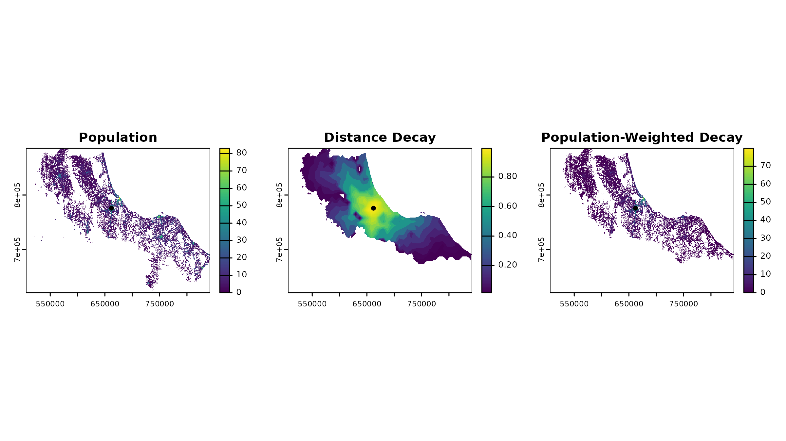
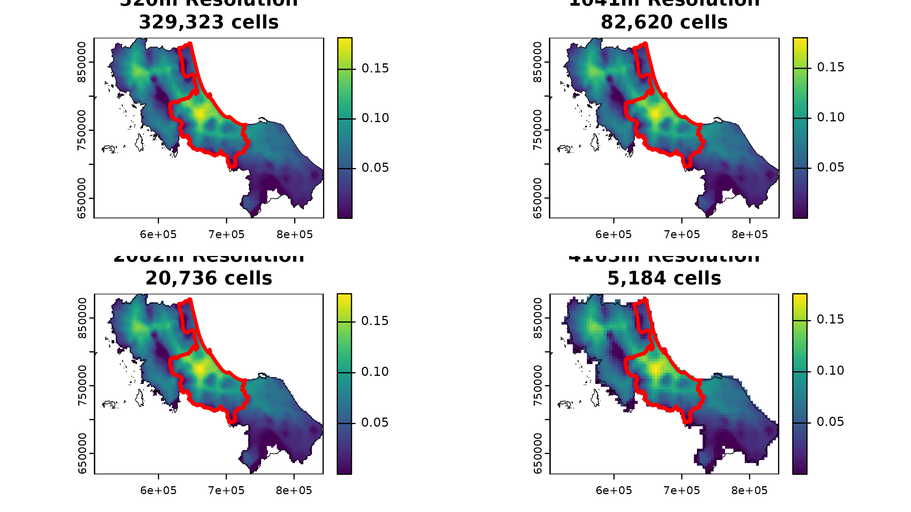

4. Why Rasters? The Pros, Cons, and Best Practices
Source:vignettes/spax-104-raster-tradeoff.Rmd
spax-104-raster-tradeoff.RmdWhy Rasters? The Pros, Cons, and Best Practices
If you’ve worked through the previous vignettes, you’ve seen how spax relies heavily on raster operations for spatial accessibility analysis. But why did we choose this approach? And more importantly, what does it mean for your analysis? In this vignette, we’ll explore the practical implications of using raster-based operations, looking at both the benefits and challenges, and providing concrete strategies for optimizing your workflows.
# Load required packages
library(spax)
library(terra)
library(pryr) # for memory tracking
library(tidyverse)
#> Error in get(paste0(generic, ".", class), envir = get_method_env()) :
#> object 'type_sum.accel' not found
library(sf)
library(bench) # fotr benchmarkingUnderstanding the Raster Approach
Think of a raster as a giant spreadsheet laid over your study area. Instead of tracking individual points or complex polygons, we store values in a regular grid of cells. This might seem simple, but it’s this very simplicity that makes raster operations so powerful for accessibility analysis. Let’s see this in action with our example data:
# Load example population density
pop <- rast(u5pd)
# Quick look at what we're working with
(pop)
#> class : SpatRaster
#> dimensions : 509, 647, 1 (nrow, ncol, nlyr)
#> resolution : 520.4038, 520.4038 (x, y)
#> extent : 505646.5, 842347.8, 620843.7, 885729.2 (xmin, xmax, ymin, ymax)
#> coord. ref. : +proj=utm +zone=47 +datum=WGS84 +units=m +no_defs
#> source(s) : memory
#> name : tha_children_under_five_2020
#> min value : 0.00000
#> max value : 83.07421
cat("Total cells:", ncell(pop), "\n")
#> Total cells: 329323When we calculate accessibility, nearly everything becomes a grid operation:
- Population? A grid of density values
- Travel time? A grid for each facility
- Distance decay? A transformation of those grids
- Final accessibility? You guessed it - another grid
Spatial accessibility often boils down to “map algebra”:
Rasters make that algebra super direct: you take your population
raster, multiply by a distance raster, and sum the result. Libraries
like terra are built for
these cell-by-cell operations, and spax simply arrange them
in a handy workflow.
The Good: Why Raster Operations Works
1. Vectorized Operations = Efficient Computation
One of the biggest advantages of raster operations is that they’re naturally vectorized. Instead of looping through points or polygons, we can perform operations on entire surfaces at once. Let’s see this in practice:
# First, let's create test datasets of different sizes
create_test_distance <- function(n_facilities) {
# Take our original distance raster and replicate it
base_distance <- rast(hos_iscr)[[1]] # Use first facility as template
# Create a stack with n copies
test_stack <- rep(base_distance, n_facilities)
names(test_stack) <- paste0("facility_", 1:n_facilities)
return(test_stack)
}
# Test with different numbers of facilities
test_decay_scaling <- function(n_facilities) {
# Create test data
test_distances <- create_test_distance(n_facilities)
# Time the decay calculation
start_time <- Sys.time()
decay_weights <- calc_decay(
test_distances,
method = "gaussian",
sigma = 30
)
end_time <- Sys.time()
# Return timing and data size
return(list(
n_facilities = n_facilities,
n_cells = ncell(test_distances) * nlyr(test_distances),
runtime = as.numeric(difftime(end_time, start_time, units = "secs"))
))
}
# Run tests with dramatically different sizes
facility_counts <- c(1, 10, 100)
scaling_results <- lapply(facility_counts, test_decay_scaling)
# Create summary table
scaling_summary <- tibble(
'Facilities' = sapply(scaling_results, `[[`, "n_facilities"),
'Total Cells' = sapply(scaling_results, `[[`, "n_cells"),
'Runtime (s)' = sapply(scaling_results, function(x)
round(x$runtime, 2))
) |> mutate(
"Time per Cell (ms)" = `Runtime (s)` * 1000 / `Total Cells`,
'Total Cells' = format(`Total Cells`, big.mark=",") # Format after calculations
)
# "Computation Scaling with Facility Count:"
(scaling_summary)
#> # A tibble: 3 × 4
#> Facilities `Total Cells` `Runtime (s)` `Time per Cell (ms)`
#> <dbl> <chr> <dbl> <dbl>
#> 1 1 " 329,323" 0.02 0.0000607
#> 2 10 " 3,293,230" 0.13 0.0000395
#> 3 100 "32,932,300" 0.98 0.0000298The results tell a compelling story about vectorized efficiency:
- While we increased the number of facilities from 1 to 100 (100x more
data):
- The total runtime only increased from 0.18s to 0.96s (about 5x)
- The time per cell actually decreased from 5.47e-4 to 2.92e-5 milliseconds
- This super-efficient scaling happens because:
Operations are vectorized across all cells simultaneously
Additional facilities leverage the same computational machinery
Memory access patterns remain efficient even with more layers
2. Consistent Data Structures
Once you decide on a raster resolution (e.g., 500m cells), everything—population, distance, decayed weight, final accessibility—can be stored in the same grid. That means fewer mismatches, repeated coordinate transformations, or swapping between point sets and polygons. You’re just piling up new layers on the same “sheet.”
# Look at alignment of our key datasets
check_alignment <- function(rast1, rast2, name1, name2) {
cat("\nComparing", name1, "and", name2, ":\n")
cat("Same resolution?", all(res(rast1) == res(rast2)), "\n")
cat("Same extent?", all(ext(rast1) == ext(rast2)), "\n")
cat("Same CRS?", crs(rast1) == crs(rast2), "\n")
}
# Check population and distance rasters
check_alignment(
rast(u5pd),
rast(hos_iscr),
"Population",
"Distance"
)
#>
#> Comparing Population and Distance :
#> Same resolution? TRUE
#> Same extent? TRUE
#> Same CRS? TRUE3. Built-in Spatial Relationships
The grid structure of rasters automatically handles spatial interactions in an elegant way. For instance, when we calculate accessibility, the raster structure ensures that:
- Only populated areas contribute to demand calculations
- Distance decay is automatically limited to areas with
population
- NA values propagate naturally through calculations
# Look at one facility's service area
facility_id <- hc12_hos$id[1] # First facility
facility_distance <- rast(hos_iscr)[[1]]
pop <- rast(u5pd)
# Calculate decay weights
decay_weights <- calc_decay(
facility_distance,
method = "gaussian",
sigma = 60
)
# The population raster automatically masks unpopulated areas
weighted_pop <- pop * decay_weights
# Visualize how spatial relationships are preserved
par(mfrow = c(1, 3))
plot(pop, main = "Population")
plot(vect(hc12_hos[1,]), add = TRUE, pch = 16)
plot(decay_weights, main = "Distance Decay")
plot(vect(hc12_hos[1,]), add = TRUE, pch = 16)
plot(weighted_pop, main = "Population-Weighted Decay")
plot(vect(hc12_hos[1,]), add = TRUE, pch = 16)
The Trade-Offs: The Trade-offs: Resolution, Precision, and Computation
After exploring the benefits of raster operations, it’s time to confront their fundamental limitations. Every raster analysis starts with a critical choice: what cell size should we use? This seemingly simple decision affects both computational efficiency and spatial precision.
The Resolution Dilemma
Let’s explore how resolution affects both computation time and analysis results:
# Prepare test datasets at different resolutions first
prep_test_data <- function(factor) {
# Aggregate both population and distance
pop_agg <- aggregate(rast(u5pd), fact = factor, fun = sum, na.rm = TRUE)
dist_agg <- aggregate(rast(hos_iscr), fact = factor, fun = mean, na.rm = TRUE)
return(list(pop = pop_agg, dist = dist_agg))
}
# Test computation time for actual analysis
test_computation <- function(test_data) {
start_time <- Sys.time()
result <- spax_e2sfca(
demand = test_data$pop,
supply = hc12_hos |> st_drop_geometry(),
distance = test_data$dist,
decay_params = list(method = "gaussian", sigma = 30),
demand_normalize = "standard",
id_col = "id",
supply_cols = "s_doc",
snap = TRUE # Fast mode for testing
)
end_time <- Sys.time()
# Return core metrics
list(
resolution = res(test_data$pop)[1],
ncells = ncell(test_data$pop),
runtime = as.numeric(difftime(end_time, start_time, units = "secs")),
result = result
)
}
# Test a range of resolutions
factors <- c(1, 2, 4, 8) # Each step doubles cell size
test_data <- lapply(factors, prep_test_data)
#> Warning: [aggregate] all values in argument 'fact' are 1, nothing to do
#> Warning: [aggregate] all values in argument 'fact' are 1, nothing to do
results <- lapply(test_data, test_computation)
# Create summary table
scaling_summary <- tibble(
'Resolution (m)' = sapply(results, function(x) round(x$resolution)),
'Grid Cells' = sapply(results, function(x) x$ncells),
'Runtime (s)' = sapply(results, function(x) round(x$runtime, 2))
) |> mutate(
'Time per Cell (μs)' = `Runtime (s)` * 1e6 / `Grid Cells`,
'Grid Cells' = format(`Grid Cells`, big.mark=",")
)
# "Performance Impact of Resolution:"
scaling_summary
#> # A tibble: 4 × 4
#> `Resolution (m)` `Grid Cells` `Runtime (s)` `Time per Cell (μs)`
#> <dbl> <chr> <dbl> <dbl>
#> 1 520 "329,323" 2.71 8.23
#> 2 1041 " 82,620" 0.76 9.20
#> 3 2082 " 20,736" 0.18 8.68
#> 4 4163 " 5,184" 0.07 13.5But what about precision? Let’s look at how resolution affects our accessibility results for specific locations:
# Select one province
prov_exam <- bound1[1,]
# Compare mean accessibility values within a province
extract_province_access <- function(result) {
# Extract mean accessibility for first province
# Extract zonal statistics
zonal_mean <- terra::extract(
result,
vect(prov_exam),
fun = mean,
na.rm = TRUE
)[,2] # The second column contains the mean value
return(zonal_mean)
}
# Create provincial comparison across resolutions
access_comparison <- tibble(
'Resolution (m)' = sapply(results, function(x) round(x$resolution)),
'Mean Provincial Access' = sapply(results, function(x)
round(extract_province_access(x$result), 4))
) |> mutate(
'Difference from Baseline (%)' = round(
(`Mean Provincial Access` - first(`Mean Provincial Access`)) /
first(`Mean Provincial Access`) * 100,
2
)
)
# Mean Accessibility in one province
prov_exam$ADM1_EN # Name of the province
#> [1] "Songkhla"
access_comparison
#> # A tibble: 4 × 3
#> `Resolution (m)` `Mean Provincial Access` `Difference from Baseline (%)`
#> <dbl> <dbl> <dbl>
#> 1 520 0.0817 0
#> 2 1041 0.0816 -0.12
#> 3 2082 0.0815 -0.24
#> 4 4163 0.0798 -2.33Let’s visualize what’s happening to our spatial data:
# Create a 2x2 plot showing accessibility at different resolutions with province highlight
par(mfrow = c(2, 2))
for(i in seq_along(results)) {
# Plot base accessibility surface
plot(results[[i]]$result,
main = sprintf("%0.0fm Resolution\n%s cells",
results[[i]]$resolution,
format(results[[i]]$ncells, big.mark=",")))
# Add full region boundary in thin black
plot(vect(bound0), add = TRUE, lwd = 0.5)
# Highlight our test province in thicker white
plot(vect(bound1[1,]), add = TRUE, border = "red", lwd = 3)
}
These results tell an interesting story about resolution trade-offs:
- Computational costs vary dramatically:
- Going from 520m to 4163m cells reduces our grid from 329,323 to 5,164 cells
- Processing time scales accordingly with cell count
- Each level of aggregation roughly quarters our computational load
- But accessibility patterns remain remarkably stable:
- Mean accessibility in our test province only varies by about 2% across resolutions
- Even at 4x coarser resolution (2082m), the difference is just 0.12%
- Only at the coarsest resolution (4163m) do we see a more noticeable change of -2.20%
This stability suggests that while raster operations necessarily involve some loss of precision, the overall patterns of accessibility often remain robust across reasonable resolution choices. For regional planning purposes, this means we can often use coarser resolutions without significantly compromising our conclusions. The key is choosing a resolution that matches your analytical needs.
The Best Practices: Optimizing Your Raster Workflow
Now that we understand both the power and limitations of raster-based analysis, let’s look at concrete strategies for getting the most out of spax while avoiding common pitfalls.
1. Start Coarse, Then Refine
Always prototype your analysis at a coarser resolution first:
Catch issues early when computations are fast
Test different parameters efficiently
A simple workflow might look like:
# Quick prototype at coarse resolution
coarse_test <- spax_e2sfca(
demand = aggregate(rast(u5pd), fact = 4), # 4x coarser
supply = hc12_hos |> st_drop_geometry(),
distance = aggregate(rast(hos_iscr), fact = 4),
decay_params = list(method = "gaussian", sigma = 30),
demand_normalize = "standard",
id_col = "id",
supply_cols = "s_doc"
)
# Once satisfied, run at final resolution
final_analysis <- spax_e2sfca(
demand = rast(u5pd),
supply = hc12_hos |> st_drop_geometry(),
distance = rast(hos_iscr),
decay_params = list(method = "gaussian", sigma = 30),
demand_normalize = "standard",
id_col = "id",
supply_cols = "s_doc"
)2. Match Resolution to Analysis Scale
Choose your resolution based on your analytical needs & never use a resolution finer than your coarsest input data
3. Validate Against Known Totals
Always check your aggregated results against known values:
Population totals should remain stable across resolutions
Compare accessibility metrics at key locations
Verify that patterns match expected behavior
Consider zonal statistics for administrative units
4. Consider Your Analysis Goals
Choose your approach based on what matters most:
Need quick regional patterns? Use coarser resolutions
Studying local variations? Invest in finer resolution
Doing sensitivity analysis? Start coarse and progressively refine
Remember: finer resolution ≠ better analysis
5. Document Your Choices
Always document your resolution and processing choices:
# Example documentation structure
analysis_metadata <- list(
resolution = res(rast(u5pd)),
extent = ext(rast(u5pd)),
cell_count = ncell(rast(u5pd)),
parameters = list(
decay = list(method = "gaussian", sigma = 30),
normalization = "standard"
),
rationale = paste(
"500m resolution chosen to balance",
"neighborhood-level detail with computational efficiency"
)
)Conclusion
Overall, raster operations are pretty handy for analyzing spatial accessibility. They provide quick computations and reliable data structures. However, it’s important to keep in mind the balance between resolution, precision, and computation time. I hope this vignette has helped you understand the trade-offs in raster-based analysis a bit better. Enjoy your spax!